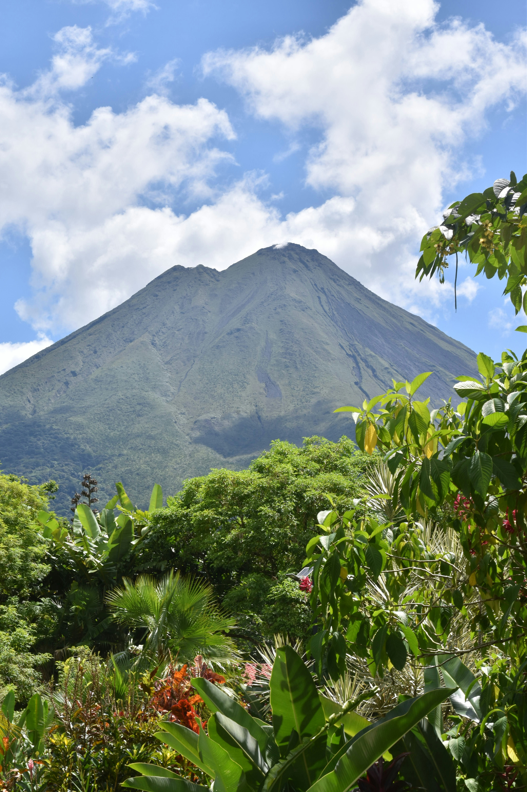

One Day in La Fortuna: The Perfect 24-Hour Itinerary
Short on time? Here is how to see the best of Arenal in just one day.

Can you see La Fortuna in just one day? Yes! While we recommend staying longer, this 24-hour itinerary will take you through the most iconic spots: a majestic waterfall, a volcano hike, and relaxing thermal waters.
8:00 AM - La Fortuna Waterfall
Start your day early to beat the crowds. Head to the La Fortuna Waterfall. Hike down the 500 steps, take a quick swim, and enjoy the power of the 70-meter drop.
Pro tip: Wear your swimsuit under your clothes to save time.
12:00 PM - Lunch at a Local Soda
Drive back towards town for a traditional "Casado". Check our list of the best sodas to eat like a local without spending much.
2:00 PM - Arenal Volcano Hike
Head to the National Park or the 1968 Trail. Walk over the old lava fields and enjoy the best views of the volcano cone. If you prefer wildlife, you can visit the Hanging Bridges instead.
6:00 PM - Hot Springs Relaxation
End your day the right way. Soak your tired muscles in the thermal waters. Whether you choose a luxury resort or the free river, this is the essential La Fortuna experience.
Important: How to move around?
To complete this itinerary in one day, having a rental car is highly recommended. Taxis and Ubers are available, but they can be expensive for multiple trips. Check our Transport Guide for more details.